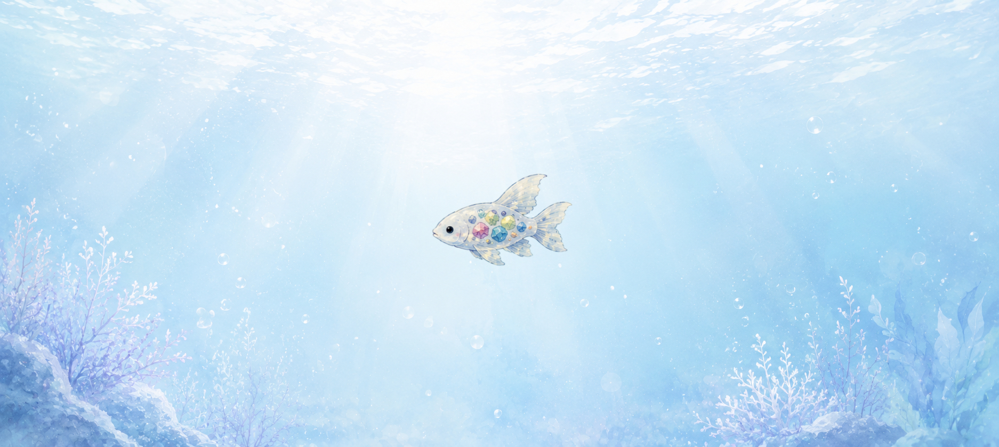
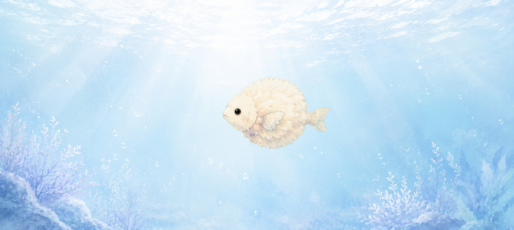
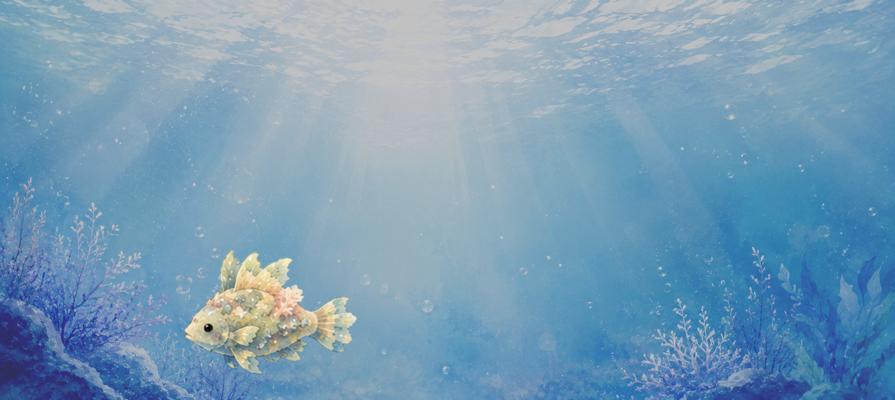

🏛 展示室案内
館内では、ユメウオの特徴ごとに展示室を分けています。 気になる展示をゆっくりご覧ください。
- 🌟 展示室1 夜空に輝くユメウオ
- 🌈 展示室2 光をまとったユメウオ
- 🌙 展示室3 月と関係するユメウオ
- ☁ 展示室4 空を泳ぐユメウオ
- 🌊 展示室5 深海のユメウオ
- 🌸 展示室6 季節を感じるユメウオ
- 💎 展示室7 宝石を育てるユメウオ
- 🌼 展示室8 風に旅するユメウオ
- 🪸 展示室9 海を守るユメウオ

ようこそ、ユメウオ博物館へ。
ここでは、これまで紹介してきた不思議なユメウオたちを展示しています。
目撃情報や研究記録をもとに、ユメウオたちの特徴や
「なぜこのような姿になったのか」という考察をまとめています。
館内では、ユメウオの特徴ごとに展示室を分けています。 気になる展示をゆっくりご覧ください。

| 展示名 | ホシナガレウオ |
|---|---|
| 生息場所 | 星空海岸・夜の海 |
| 特徴 | 尾びれが星のように輝き、 夜になるほど美しい光を放つと言われています。 |
| 発見記録 | 夜空を見上げていた人が、 流れ星のような光が泳いでいる姿を見たという報告があります。 |
星の光や人々の願いが集まり、 魚の姿になったのではないかと考えられています。 まだ詳しい生態は分かっていません。

| 展示名 | ニジヒレウオ |
|---|---|
| 生息場所 | 虹ヶ浜・雨上がりの海 |
| 特徴 | 七色に変化するひれを持ち、 天気によって体の色が変わると言われています。 |
| 発見記録 | 虹が出た直後に、 海面を跳ねる七色の魚を見たという目撃があります。 |
虹の光を取り込むことで、 少しずつ色を変化させる力を得たのではないかと考えられています。

| 展示名 | ツキヨミウオ |
|---|---|
| 生息場所 | 月見池・静かな夜の水辺 |
| 特徴 | 満月の夜にだけ姿を現し、 月の光を浴びると銀色に輝きます。 |
| 発見記録 | 夜の池で、水面に浮かぶ銀色の光を見たという 目撃情報が多く寄せられています。 |
月の光をエネルギーに変えて活動しているのではないか、 という説があります。 しかし、姿を見せる時間が短いため研究は続いています。

| 展示名 | クモノミ |
|---|---|
| 生息場所 | 雲の近く・高い空 |
| 特徴 | 雲の間を漂うように移動し、 空を泳いでいるように見える珍しいユメウオです。 |
| 発見記録 | 空に魚の影が浮かんでいた、 雲の間を魚が通ったように見えたという報告があります。 |
海ではなく空を選んだ理由はまだ分かっていません。 風や雲の流れを利用して移動している可能性があります。

| 展示名 | ヒカリクジラウオ |
|---|---|
| 生息場所 | 深海・光の届かない海域 |
| 特徴 | 巨大な体を持ちながら、とても穏やかな性格です。 体の発光模様は見る人によって違って見えると言われています。 |
| 発見記録 | 深い海の中で、大きな光がゆっくり動いていたという 目撃情報があります。 |
長い年月を深海で過ごすことで、 自ら光を生み出す能力を身につけたのではないかと考えられています。

| 展示名 | ユメサクラウオ |
|---|---|
| 生息場所 | 桜の咲く川・春の水辺 |
| 特徴 | 春になると桜の花びらのような模様のうろこをまとい、 美しい姿になります。 |
| 発見記録 | 桜の季節にだけ現れる、 幸運を呼ぶ魚として昔から語られています。 |
人々が春を待つ気持ちや、 桜への思いが魚の姿になったのではないかと言われています。

| 展示名 | コイロウオ |
|---|---|
| 生息場所 | 宝石の浜・透き通った海 |
| 特徴 | 体の中に小さな宝石を育てる不思議なユメウオです。 食べた鉱石や貝殻のかけらが、長い時間をかけて宝石のように輝き始めます。 一匹ずつ色や模様が違うため、「世界に一匹だけの魚」と呼ばれています。 |
| 発見記録 | 朝日に照らされた海の中で、宝石のようにきらめく魚を見たという目撃情報があります。 |
長い年月をかけて体内で鉱石を育てることで、 世界に一つだけの美しい輝きを持つようになったのではないかと考えられています。

| 展示名 | フワリウオ |
|---|---|
| 生息場所 | 春の海・穏やかな潮流 |
| 特徴 | たんぽぽの綿毛のようにふわふわ漂うユメウオです。 流れに逆らわず、風や潮に身をまかせて旅を続けています。 春になると海面近くまで浮かび、小さな子どもたちにだけ姿を見せると言われています。 |
| 発見記録 | 春の日に海辺で、綿毛のような魚がゆっくり空と海の間を漂っていたという報告があります。 |
風と海の流れを友達にして暮らしているため、 争うことなく世界中の海を旅しているのではないかと言われています。

| 展示名 | シオマモリウオ |
|---|---|
| 生息場所 | サンゴ礁・海そうの森 |
| 特徴 | サンゴや海そうの森を守る小さなユメウオです。 体には海底の色が映り込み、周りの景色と同じ色に変わることができます。 サンゴが元気に育つ海には、必ずこの魚が暮らしていると言われています。 |
| 発見記録 | 色が変わる小さな魚がサンゴの周りを泳ぎ、 傷んだ海が少しずつ元気になっていったという目撃情報があります。 |
海の生き物たちを見守りながら、 サンゴや海そうが育つ環境を静かに守り続けているのではないかと考えられています。
ユメウオ博物館では、現在も新しいユメウオの研究を続けています。
全国から寄せられる 「光る魚を見た」 「夜の川に何か浮かんでいた」 「夢の中で不思議な魚を見た気がする」 という小さな情報も、大切な研究資料です。
まだ発見されていないユメウオが、 どこかに存在しているかもしれません。
不思議な魚を見かけた方は、目撃情報ページから投稿してください。